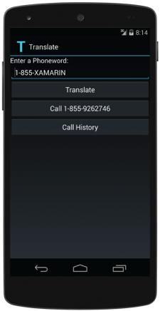
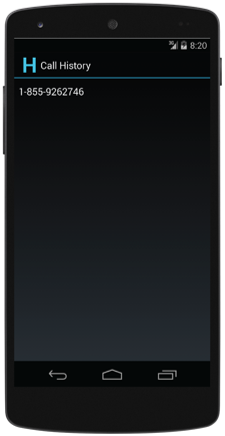
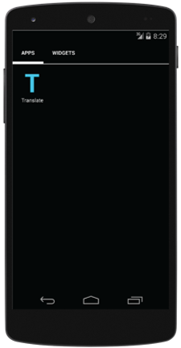
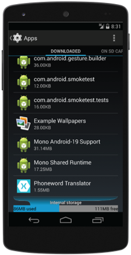
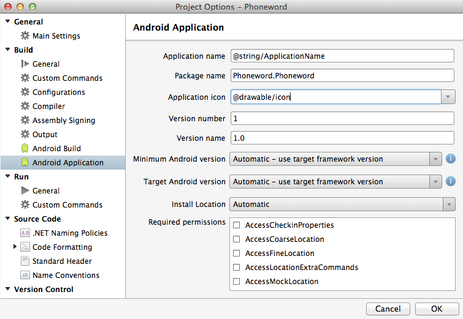

Exercise 5: Use Resources to incorporate custom labels and icons
Duration
10 minutes
Lab goals
The Phoneword application currently uses the default Android image for its icon and the Xamarin Studio project name as its label which is not ideal from a user-information or branding perspective. The goal of this lab is to utilize custom icons and labels for each of your activities and for the application as a whole.
The images below show the how the app's activities will look at the end of this exercise. Notice how each has a unique icon and an appropriate text label at the top.
|  |  |
These last two images show how the app will look on the Android screens. On the left is the Launcher screen and on the right is the Settings > Apps screen.
|  |  |
Here is a high-level description of the required tasks for this lab:
- Remove the existing drawable folder and replace it with the supplied folders containing custom icons.
- Set the application Label and Icon.
- Set the Label and Icon for MainActivity and CallHistoryActivity.
Required assets
The provided Part 05 Resources folder contains resources that you will need in order to complete the lab:
- A starter solution with the completed code from the previous part which you can use if you did not do the previous exercise or if you would like to begin with a fresh project. The starter solution is in the Part5.Start folder.
- Icons in multiple sizes, each in a folder that indicates its size: drawable-ldpi, drawable-hdpi, etc.
- A completed version of the lab in the Part5.Completed folder if you would like to check your work.
Please make sure you have this folder before you begin.
Exercise challenge
Use the information in the worksheet to accomplish the tasks outlined above. Alternatively, you can use the step-by-step instructions provided below to work through the exercise.
Steps
Below are the step-by-step instructions to incorporate custom icons and labels.
Verify the default icons and labels
Before you begin customizing the icons and labels, please take a moment to examine how the app looks in its current state. Deploy the Phoneword app to the emulator or to your device. Look at how Phoneword is displayed on both the Launcher screen and the Settings > Apps screen. Run the application and note the icon and label used on each of the two activities. Close the app when you are finished and return to Xamarin Studio.
Adding supplied icons
Here you will replace the default icons in your project with custom icons. The custom icons are supplied in several sizes so there will be several folders to add to your project.
- In the Solution pad, right-click on the Resoures > drawable folder and choose Delete.
- Use Windows File Explorer or Mac Finder to locate the six folders named drawable in the supplied Part 05 Resources folder (one of the six is simply named drawable while the other five have a suffix such as -mdpi). Drag all six folders from File Explorer or Finder into Xamarin Studio and drop them on the Resources folder in your project. This will copy the folders and their contents to your project folder and add them to your project. It also correctly sets the Build Action on each file to Android Resource. Alternatively, you could create the folders manually in Xamarin Studio and add the individual files; however, drag-and-drop is much more convenient.
- Take a moment to examine the contents of the six drawable folders in your project. Notice that the same files appear in each folder, with the icons rendered at different resolutions.
Setting the application Icon and Label
Here we will set the application-level Icon and Label.
- Open Resources > values > Strings.xml.
- It is typical to define the application name as a resource string; the project template already created a string for this which we will modify. Change the app_name to ApplicationName and set the value for the entry to "Phoneword Translator".
- Open the Project Properties and select the Android Manifest tab.
- Set the Application name and Application Icon values as shown below. 
-
Deploy the application to the emulator or your device (you can also run the app if you would like to
but deployment is all that is needed for this part). Navigate to the Settings > Apps
screen in Android. Verify the listing for Phoneword uses the application name and icon
you set in the previous step.
Note: these application-level settings are used as the defaults for your activities; if you have any activities without these settings supplied, you will see these application-level values used there during app execution.
Setting the activity Icons and Labels
Here we will set individual Icon and Label values for the two activities.
- Open MainActivity.cs.
-
Locate the
ActivityAttributeapplied to theMainActivityclass. Set theLabelto "Translate" and theIconto "@drawable/translate".Note: The orignal values for the MainActivityIconandLabelmight be more appropriate than the values you just set. Once you have finished the exercise and understand where these values are used, feel free to reset them to "Phoneword" and "@drawable/icon" as before. - Open CallHistoryActivity.cs.
-
Locate the
ActivityAttributeapplied to theCallHistoryActivityclass. Set theIconto "@drawable/history". TheLabelwas set in a previous exercise so there should be no need to modify it here. - Run the application and verify the Icon and Label are correct for your two activities. Examine the launcher screen to verify the Icon and Label for the MainActivity are used.
Summary
This lab added custom labels and icons both at the activity and application level. The application-level values represent the application as a whole and appear on the Android Settings > Apps screen. They also serve as fallback values for the corresponding activity-level values. Keep in mind that for activities that act as app entry points, the activity-level values will be used on the launcher screen and not the application-level settings.